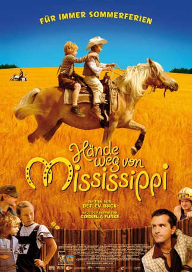

IMDB-Wertung: 6.4 / 10
IMDB-Wertung: 6.4 / 10  Metascore:
Metascore: 
 IMDB-Wertung: 6.4 / 10 Metascore:
Jahr: 2007
Dauer: 99 Minuten
FSK: 0
Land: Deutschland Studio: Delphi Filmverleih ProduktionTonspuren:
Untertitel:
Auflösung: 1080p (1920x1032) Größe: 6707 MB
Genre: Komödie, Abenteuer, Familie
Regisseur: Detlev Buck
Drehbuch: Cornelia Funke
Soundtrack: Natalia Dittrich
Darsteller:
 Katharina Thalbach als Dolly
Katharina Thalbach als Dolly Milan Peschel als Hinnerk
Milan Peschel als Hinnerk Margit Carstensen als Frau Strietzel
Margit Carstensen als Frau Strietzel David Kross als Bäckerlehrling Bröckel
David Kross als Bäckerlehrling Bröckel Christian Steyer als Betrunkener Organist
Christian Steyer als Betrunkener Organist Christoph Maria Herbst als Albert Gansmann
Christoph Maria Herbst als Albert Gansmann Ingo Naujoks als Pferdeschlachter Pit
Ingo Naujoks als Pferdeschlachter Pit Fritzi Haberlandt als Alicia
Fritzi Haberlandt als Alicia Detlev Buck als Dorfpolizist Otto
Detlev Buck als Dorfpolizist OttoDatei: X:\2007(G-M)\Hände weg von Mississippi (2007, FSK0, 1920x1032).mkv seit 15.12.2017
Festplatte: HD 2007(A-Z)-2008(A-F)
 Es gibt insgesamt 64 Filme in der Gruppe '2007(G-M)'
Es gibt insgesamt 64 Filme in der Gruppe '2007(G-M)'